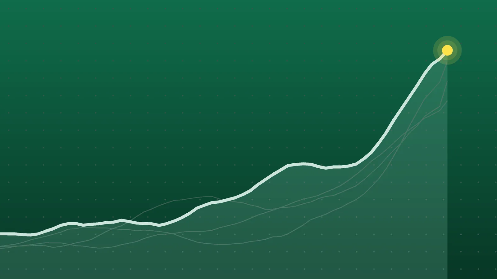

SportsExplainer
Champions League Scores, Oct. 21: Rice Rescues Arsenal at Bayern
Arsenal salvaged a late point in Munich, Real Madrid and Aston Villa stayed perfect, and two league-phase newcomers beat famous clubs. Five teams now have nine points from three games.

Quick take
- Declan Rice’s 82nd-minute goal earned Arsenal a 2-2 draw at Bayern Munich after Harry Kane put Bayern ahead from the penalty spot.
- Real Madrid beat RB Leipzig 4-1 and Aston Villa beat Viking 3-1, keeping both clubs at nine points from three games.
- Como beat Manchester United 4-1, and league-phase debutant LASK won 3-2 at Sporting CP.
- Matchday 4 is Nov. 3-4, with Manchester United hosting Roma and Barcelona hosting Aston Villa.
Why it's trending Nine UEFA Champions League league-phase matches on Wednesday, Oct. 21, completed Matchday 3.
Champions League scores for Oct. 21
Arsenal were eight minutes from a defeat in Munich before Declan Rice drilled in an equalizer against Bayern. The 2-2 draw was the headline match of Wednesday’s Champions League slate, which completed Matchday 3 of the league phase.
The night’s most lopsided result came in Italy, where Como beat Manchester United 4-1, a game we covered in our Como vs. Manchester United explainer. Real Madrid, Aston Villa and Real Betis all won to stay perfect, and Austrian newcomer LASK stunned Sporting CP 3-2 in Lisbon. All nine matches kicked off at 3 p.m. ET.
All final scores
| Home | Score | Away | Note |
|---|---|---|---|
| Como | 4-1 | Manchester United | Nico Paz scored twice, including a second-minute opener |
| Bayern Munich | 2-2 | Arsenal | Rice equalized in the 82nd minute; Bukayo Saka left injured early |
| Real Madrid | 4-1 | RB Leipzig | Kylian Mbappé scored his 73rd Champions League goal |
| Aston Villa | 3-1 | Viking | Ross Barkley headed the opener; Villa are 3-0-0 |
| Lille | 2-4 | Galatasaray | Victor Osimhen’s long-range strike finished it |
| Club Brugge | 3-0 | Lens | Second straight win for Brugge |
| Inter Milan | 1-0 | Shakhtar Donetsk | Carlos Augusto scored after Inter went down to 10 men |
| Real Betis | 1-0 | Feyenoord | Isco’s penalty in the 59th minute |
| Sporting CP | 2-3 | LASK | League-phase debutant wins in Lisbon |
Scores are from UEFA’s results page and NBC Sports. Home teams won six, drew one and lost two.
Bayern 2-2 Arsenal: a late leveler
Arsenal lost Saka to what looked like a left thigh problem about 10 minutes in, and his replacement, Eberechi Eze, scored in the 25th minute after a video review overturned an offside flag. Bayern answered through Alphonso Davies, who finished a long pass from Harry Kane in the 35th.
Kane then put Bayern ahead from the spot in the 61st minute after a handball by Jurriën Timber, extending his run to 10 straight Champions League matches with a goal, according to NBC Sports. Rice tied it in the 82nd, his first goal since March. Without that goal, Arsenal would have lost for the first time in 14 league-phase and group-stage games, Sky Sports noted. Mikel Arteta said Saka’s injury “doesn’t look good at all.”
Real Madrid and Villa stay perfect
Madrid’s win looked more comfortable on the scoreboard than it was: they led just 2-0 with 10 minutes left. Bernardo Silva opened the scoring in the 43rd minute, his first goal for the club, and Arda Güler made it 2-0 seven minutes into the second half, AFP reported via Al Jazeera. Substitute Yan Diomande then set up Mbappé and scored the fourth himself. Tidiam Gomis got Leipzig’s goal in the 85th. Football España reported that some fans whistled Vinícius Júnior when he was taken off.
At Villa Park, Barkley and an Emiliano Buendía penalty put Villa up 2-0 by the 37th minute, and a Viking own goal made it 3-0. The third goal briefly lifted Villa to the top of the table, but Viking’s late consolation dropped them back to second behind Paris Saint-Germain, Sky Sports reported.
Upsets in Lisbon and Lille
LASK, one of four clubs making their league-phase debut this season, came from behind at Sporting. Luis Suárez’s fifth-minute penalty gave the hosts the lead, but goals from Christoph Lang, Saša Kalajdžić and Kryštof Daněk made it 3-1 before Suárez scored again in the 89th, Portugoal reported. Sporting stay on six points.
In France, Lille led Galatasaray twice, both times through Soriba Diaoune, but the Turkish side scored the last three goals, beIN Sports reported. Lille remain without a point.
What it means
In the 36-team league phase, each club plays eight games, so three rounds in, every team has five left. After Matchday 3, five teams have a perfect nine points: PSG, Aston Villa, Liverpool, Real Madrid and Real Betis. Arsenal and Stuttgart have seven, Como six and Bayern five.
Manchester United are 21st with three points. The top eight qualify directly for the round of 16, and teams ranked ninth through 24th go to a playoff round, so United are inside the playoff places for now but six points off the five leaders. Porto, Lille and Slovan Bratislava are the teams still on zero.
What’s next
Matchday 4 is Tuesday, Nov. 3, and Wednesday, Nov. 4. Because U.S. clocks fall back on Nov. 1, the usual kickoffs will be 12:45 p.m. and 3 p.m. ET. Highlights include Atlético Madrid vs. Bayern, Barcelona vs. Aston Villa and Manchester United vs. Roma on Nov. 3, and RB Leipzig vs. Manchester City, Lens vs. Como and Slavia Prague vs. Arsenal on Nov. 4, all at 3 p.m. ET.
Sources
- UEFA 2026/27 Champions League: All the league phase fixtures and resultsOct. 21, 2026
- NBC Sports UEFA Champions League: Bayern, Arsenal settle for entertaining point, Real roll after Man Utd bashed by ComoOct. 21, 2026
- Sky Sports Bayern Munich 2-2 Arsenal: Declan Rice secures draw for Gunners in Champions League after Harry Kane penaltyOct. 21, 2026
- Sky Sports Como 4-1 Man Utd: Michael Carrick's side ripped apart in Italy during Champions League hammeringOct. 22, 2026
- Sky Sports Aston Villa 3-1 Viking: Alysson stars as Unai Emery's side make it three wins from three in the Champions LeagueOct. 21, 2026
- Al Jazeera (AFP) Real Madrid rout RB Leipzig 4-1 to continue perfect Champions League startOct. 21, 2026
- Football España Diomande outshines booed Vinícius as Mbappé leads Real Madrid past Leipzig 4-1Oct. 22, 2026
- Portugoal Sporting 2-3 LASK Linz: Lions fall to shock Champions League defeat in LisbonOct. 21, 2026
- beIN Sports Galatasaray beat Lille 4-2 in UEFA Champions League after twice surrendering the initiativeOct. 21, 2026
Keep reading
Como vs. Manchester United: Como Rout United 4-1 in Champions League
Como beat Manchester United 4-1 in the Champions League on Oct. 21. Goals, key stats, what Carrick and Fernandes said and what it means for United.

Europa League Scores, Oct. 22: Bournemouth Beat 10-Man Milan 3-0
Europa League scores for Oct. 22, 2026: all 18 Matchday 3 results, including Bournemouth 3-0 Milan, Beşiktaş 2-2 Crystal Palace and Hoffenheim 3-0 Lyon.
NBA Scores, Oct. 21: Edwards’ 45 Spoils Giannis’ Heat Debut
NBA scores for Oct. 21, 2026: all 11 final results, including Anthony Edwards’ 45 in Miami, Ty Jerome’s 45 for Memphis and Raptors 135, Bulls 92.